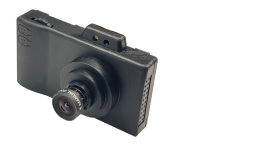

Explainer · ESPHome
ESP32-P4 explained for home builders: displays, cameras, voice and the C6 Wi-Fi problem
The ESP32-P4 is Espressif's newest chip, and the first one that is not really a wireless chip at all. Per the Espressif product page, it is a dual-core RISC-V system on chip running up to 400 MHz, built around screens, cameras and audio rather than radios: it has no Wi-Fi or Bluetooth of its own and is designed to pair with a wireless co-processor, typically an ESP32-C6. If you build ESPHome devices — dashboards, camera front ends, voice satellites — this is the chip that changes what a DIY board can do. This guide explains what is inside it, what ESPHome supports today, how to handle the missing radio, and which boards to buy.
What the ESP32-P4 is
The headline spec, straight from the Espressif datasheet page: two RISC-V cores at up to 400 MHz with AI instruction extensions and a single-precision floating point unit, plus a low-power core that runs up to 40 MHz for intermittent background work such as waking on a timer without spinning up the main cores. Memory is 768 KB of on-chip SRAM plus 8 KB of zero-wait tightly coupled memory; external PSRAM is cacheable, which matters for anything that renders a display or buffers camera frames.
The AI instruction extensions are the quiet part of the story. ESPHome's voice pipeline does wake-word detection and audio processing on-chip, and earlier chips did that with vector extensions on the S3. The P4 continues that direction with more headroom per the spec sheet, at a higher clock speed than the S3's 240 MHz ceiling.
Why the P4 exists: screens and cameras first
Espressif positions the P4 as a human-machine interface and edge-computing chip. Concretely, per the same product page:
- MIPI-DSI display output up to 1080p, plus a parallel display interface for simpler panels (the kind used by cheap RGB and I80 screens).
- MIPI-CSI camera input up to 1080p with an integrated image signal processor, plus a parallel camera interface. The ISP is on-chip, which means de-mosaic, color and exposure handling do not need to be done by your firmware.
- Hardware H.264 encoding at 1080p at 30 frames per second, alongside a Pixel Processing Accelerator (PPA) and 2D-DMA for scaling, rotation and blending without loading the CPU.
- Capacitive touch and speech recognition support — the touch controller interface drives the screens, and the audio path feeds voice front ends.
For comparison, the S3 took parallel camera interfaces and drove displays over SPI or parallel RGB, which caps resolution and eats CPU time. DSI, CSI and hardware H.264 encode are new territory for an ESP-class chip. Choose carefully between the radio-equipped and display-equipped chips — our ESP32-C6 vs ESP32-S3 comparison covers that choice for the previous generation.

The catch: no radio on-die
Here is the single fact that surprises people: the ESP32-P4 has no Wi-Fi and no Bluetooth. Espressif sells it as a wired-or-companion design — for a connected device, you add a wireless co-processor. The P4 has the peripherals to make that clean: 55 programmable GPIOs (more than any earlier Espressif SoC per the product page), SPI, I2S, I2C, LED PWM, MCPWM, RMT, ADC, UART, TWAI (CAN bus), USB OTG 2.0 High Speed, Ethernet and SDIO Host 3.0.
The intended companion is an ESP32-C6: it gives the P4 Wi-Fi 6, Bluetooth 5 and — importantly — 802.15.4, the radio under Thread and Zigbee. So a P4-plus-C6 board can be a wall panel with a 1080p screen that is also a Thread router. The C5 companion appears on newer devkits and adds 5 GHz Wi-Fi.
ESPHome support today
ESPHome supports the chip natively. The esp32 component documentation lists variant: esp32p4 in the esp32: platform config, running on the ESP-IDF framework (the Arduino framework is supported per the same docs). Two configuration details matter before your first flash:
- Engineering sample silicon. The docs expose an
engineering_sample: trueoption for rev 3.0-or-earlier silicon. If you usevariant: esp32p4without settingengineering_sampleexplicitly, ESPHome logs a warning. If you bought a board recently, set it tofalseand move on; boards with early silicon need the option set totrue. - Valid CPU clocks are 40, 360 and 400 MHz, and flash sizes run 2–32 MB. A config that uses another clock value will not validate.
Everything else falls into place from there: display and LVGL support work over the DSI and parallel interfaces, camera support uses the CSI interface, and the new ESPHome builds for a P4 wall panel are mostly a lvgl config plus a display driver. If you are new to the toolchain, our ESPHome guide covers the basics, and ESP32 projects lists builds you can start on the chips you already own.
Adding Wi-Fi with esp32_hosted
Because the P4 cannot talk on a radio, Wi-Fi is provided by ESPHome's esp32_hosted component (ESP-Hosted-MCU). It runs firmware on the co-processor — supported variants are ESP32, S2, S3, C2, C3 and C6 — and carries the networking over SDIO (the default) or SPI. For a P4 board, the C6 is the typical choice and covers Wi-Fi, Bluetooth and 802.15.4.
One documented gotcha is worth knowing before it boots: on the P4 (and the S3), the esp32_hosted transport buffer pool can be placed in PSRAM with use_psram: true — PSRAM is supported on those two variants only. The docs recommend it for large LVGL UIs, and warn that without it, booting with a heavy display stack can fail with an sdio_mempool_create assertion. If your P4 panel refuses to boot with Wi-Fi enabled, that option is the first thing to check.
Ethernet sidesteps the issue entirely for anything mounted on a wall near wiring: the P4 has an Ethernet MAC on-die, so a wired wall panel is a natural build.
ESP-NOW on the P4: one config line, one surprise
ESP-NOW — Espressif's connectionless, low-latency protocol that many DIY sensor projects use instead of Wi-Fi — works on the P4. The esp32_hosted documentation says ESP-NOW packets are forwarded to the co-processor; you just add espnow: to the config.
Two documented caveats. First, the ESP-NOW source MAC address is the co-processor's radio MAC, not the P4's own MAC — so if you filter or log by MAC on the receiving side, you will see the C6's address. Second, do not run ESP-NOW while Wi-Fi is in access-point mode on the P4: the docs state ESP-NOW on this setup needs the station interface up, so a P4 board acting as a Wi-Fi AP plus ESP-NOW sender is not a supported combination.
Security, for what it is worth in a house
The P4 carries the standard Espressif security set, per the product page: Secure Boot, flash encryption, hardware crypto accelerators, a true random number generator, a Digital Signature Peripheral, and a Key Management Unit that generates private keys on-chip and keeps them there. For home builders the practical meaning is simple: a P4 device holding credentials — say, a wall panel that talks to Home Assistant over the LAN — has documented hardware support for not storing those keys in readable flash. It is the same story as the C6 and S3, applied to the chip most likely to display a camera feed.
Boards you can buy
Espressif lists two official P4 devkits on the devkits page: the ESP32-P4X Function EV Board, which pairs the P4 with an ESP32-C5 co-processor (per the official documentation), and the ESP32-P4X-EYE, a camera board documented separately (docs here). Both are retailed through distributors such as DigiKey and Mouser. Partner boards — the devkit page notes boards from makers such as Waveshare and M5Stack — typically pair the P4 with a C6 co-processor, which is the combination most ESPHome projects want.

Check current listings via the Amazon search index (ESP32-P4 boards on Amazon, ESP32-P4X-EYE on Amazon) or go direct to DigiKey or Mouser, which list the official devkits. HA News does not quote prices; they move too fast to be useful in print.
Should you build on it?
A short answer, per primary sources only. The P4 is the right chip when your build is fundamentally a screen, a camera or a voice front end: a wall-mounted dashboard, a doorbell or periscope camera, a music or intercom node. For sensor nodes, switches and anything battery-powered, the C6, C3 or S3 remain the better fit — they are cheaper per the market they serve, and the P4's extra muscle buys you nothing in a mailbox sensor. The LP core handles intermittent tasks, but a whole P4 board to blink an LED is not a sensible bill of materials.
For anything that must be wireless and simple, our ESP32-C6 vs ESP32-S3 guide still answers most project decisions. Reach for the P4 when the spec sheet item you actually need is MIPI-DSI or MIPI-CSI — and accept that the radio belongs to its neighbor.
FAQ
Does the ESP32-P4 have Wi-Fi?
No. The ESP32-P4 has no radio on-die. Pair it with an ESP32-C6 (or C5) co-processor using ESPHome's esp32_hosted component, which carries Wi-Fi and Bluetooth over SDIO or SPI.
Is the ESP32-P4 supported in ESPHome?
Yes. Set variant: esp32p4 in the esp32: platform config. ESPHome documents ESP-IDF framework support, plus esp32_hosted, esp-now, LVGL and camera support.
What is the ESP32-P4 good for in a smart home?
Displays (MIPI-DSI up to 1080p), cameras (MIPI-CSI with an integrated ISP), voice and audio front ends, Ethernet and USB devices.
How fast is the ESP32-P4?
It is a dual-core RISC-V SoC running up to 400 MHz with 768 KB of on-chip SRAM, plus a low-power core up to 40 MHz.
Where can I buy an ESP32-P4 board?
Espressif sells the ESP32-P4X Function EV Board and the ESP32-P4X-EYE camera board through distributors such as DigiKey and Mouser; partner boards from makers like Waveshare and M5Stack pair the P4 with a C6 co-processor.
Do ESP-NOW devices built on the P4 show the P4's MAC address?
No. ESP-NOW traffic on the P4 is forwarded to the co-processor, so the source MAC is the co-processor's radio MAC, not the P4's.
- Primary sources
- Espressif ESP32-P4 product page; ESPHome esp32 component documentation; ESPHome esp32_hosted documentation; Espressif devkits
As an Amazon Associate, HA News earns from qualifying purchases.
Assisted by AI (Hermes). Facts sourced from the Espressif product and devkit pages and ESPHome documentation linked above; review welcome.